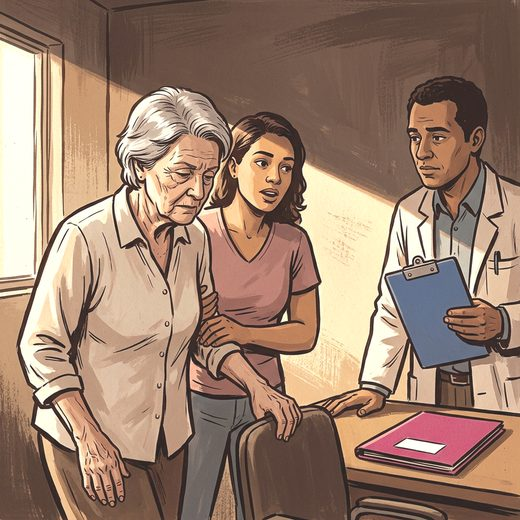

Consulta rápida à beira do leito
Condutas, doses e interações.
Referências da aula · 12
- Verghese J, Wang C, Lipton RB, Holtzer R. Motoric cognitive risk syndrome and the risk of dementia. J Gerontol A Biol Sci Med Sci. 2013;68(4):412-8. PMID 22987797. doi:10.1093/gerona/gls191.PubMedDOI
- Verghese J, Annweiler C, Ayers E, Barzilai N, Beauchet O, Bennett DA, et al. Motoric cognitive risk syndrome: multicountry prevalence and dementia risk. Neurology. 2014;83(8):718-26. PMID 25031288. doi:10.1212/WNL.0000000000000717.PubMedDOI
- Montero-Odasso M, Verghese J, Beauchet O, Hausdorff JM. Gait and cognition: a complementary approach to understanding brain function and the risk of falling. J Am Geriatr Soc. 2012;60(11):2127-36. PMID 23110433. doi:10.1111/j.1532-5415.2012.04209.x.PubMedDOI
- Lundin-Olsson L, Nyberg L, Gustafson Y. “Stops walking when talking” as a predictor of falls in elderly people. Lancet. 1997;349(9052):617. PMID 9057736. doi:10.1016/S0140-6736(97)24009-2.PubMedDOI
- Beauchet O, Annweiler C, Callisaya ML, De Cock AM, Helbostad JL, Kressig RW, et al. Poor gait performance and prediction of dementia: results from a meta-analysis. J Am Med Dir Assoc. 2016;17(6):482-90. PMID 26852960. doi:10.1016/j.jamda.2015.12.092.PubMedDOI
- Buracchio T, Dodge HH, Howieson D, Wasserman D, Kaye J. The trajectory of gait speed preceding mild cognitive impairment. Arch Neurol. 2010;67(8):980-6. PMID 20697049. doi:10.1001/archneurol.2010.159.PubMedDOI
- Studenski S, Perera S, Patel K, Rosano C, Faulkner K, Inzitari M, et al. Gait speed and survival in older adults. JAMA. 2011;305(1):50-8. PMID 21205966. doi:10.1001/jama.2010.1923.PubMedDOI
- Cruz-Jentoft AJ, Bahat G, Bauer J, Boirie Y, Bruyère O, Cederholm T, et al. Sarcopenia: revised European consensus on definition and diagnosis. Age Ageing. 2019;48(1):16-31. PMID 30312372. doi:10.1093/ageing/afy169.PubMedDOI
- Kelaiditi E, Cesari M, Canevelli M, van Kan GA, Ousset PJ, Gillette-Guyonnet S, et al. Cognitive frailty: rational and definition from an (I.A.N.A./I.A.G.G.) International Consensus Group. J Nutr Health Aging. 2013;17(9):726-34. PMID 24154642. doi:10.1007/s12603-013-0367-2.PubMedDOI
- Livingston G, Huntley J, Liu KY, Costafreda SG, Selbæk G, Alladi S, et al. Dementia prevention, intervention, and care: 2024 report of the Lancet standing Commission. Lancet. 2024;404(10452):572-628. PMID 39096926. doi:10.1016/S0140-6736(24)01296-0.PubMedDOI
- Montero-Odasso M, van der Velde N, Martin FC, Petrovic M, Tan MP, Ryg J, et al. World guidelines for falls prevention and management for older adults: a global initiative. Age Ageing. 2022;51(9):afac205. PMID 36178003. doi:10.1093/ageing/afac205.PubMedDOI
- American Psychiatric Association. Diagnostic and Statistical Manual of Mental Disorders, Fifth Edition, Text Revision (DSM-5-TR). Washington, DC: American Psychiatric Association Publishing; 2022.
Documentos oficiais
Leis e publicações do Ministério da Saúde sobre o cuidado da pessoa idosa, de acesso livre.
Abrir os documentos